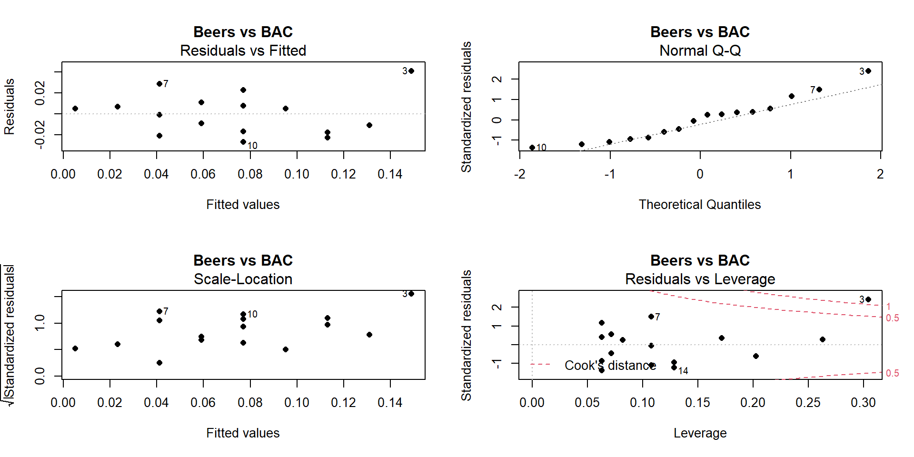

- Cover
- Acknowledgments
- 1 Preface
- 2 (R)e-Introduction to statistics
- 2.1 Histograms, boxplots, and density curves
- 2.2 Pirate-plots
- 2.3 Models, hypotheses, and permutations for the two sample mean situation
- 2.4 Permutation testing for the two sample mean situation
- 2.5 Hypothesis testing (general)
- 2.6 Connecting randomization (nonparametric) and parametric tests
- 2.7 Second example of permutation tests
- 2.8 Reproducibility Crisis: Moving beyond p < 0.05, publication bias, and multiple testing issues
- 2.9 Confidence intervals and bootstrapping
- 2.10 Bootstrap confidence intervals for difference in GPAs
- 2.11 Chapter summary
- 2.12 Summary of important R code
- 2.13 Practice problems
- 3 One-Way ANOVA
- 3.1 Situation
- 3.2 Linear model for One-Way ANOVA (cell-means and reference-coding)
- 3.3 One-Way ANOVA Sums of Squares, Mean Squares, and F-test
- 3.4 ANOVA model diagnostics including QQ-plots
- 3.5 Guinea pig tooth growth One-Way ANOVA example
- 3.6 Multiple (pair-wise) comparisons using Tukey’s HSD and the compact letter display
- 3.7 Pair-wise comparisons for the Overtake data
- 3.8 Chapter summary
- 3.9 Summary of important R code
- 3.10 Practice problems
- 4 Two-Way ANOVA
- 4.1 Situation
- 4.2 Designing a two-way experiment and visualizing results
- 4.3 Two-Way ANOVA models and hypothesis tests
- 4.4 Guinea pig tooth growth analysis with Two-Way ANOVA
- 4.5 Observational study example: The Psychology of Debt
- 4.6 Pushing Two-Way ANOVA to the limit: Un-replicated designs and Estimability
- 4.7 Chapter summary
- 4.8 Summary of important R code
- 4.9 Practice problems
- 5 Chi-square tests
- 5.1 Situation, contingency tables, and tableplots
- 5.2 Homogeneity test hypotheses
- 5.3 Independence test hypotheses
- 5.4 Models for R by C tables
- 5.5 Permutation tests for the \(X^2\) statistic
- 5.6 Chi-square distribution for the \(X^2\) statistic
- 5.7 Examining residuals for the source of differences
- 5.8 General protocol for \(X^2\) tests
- 5.9 Political party and voting results: Complete analysis
- 5.10 Is cheating and lying related in students?
- 5.11 Analyzing a stratified random sample of California schools
- 5.12 Chapter summary
- 5.13 Summary of important R commands
- 5.14 Practice problems
- 6 Correlation and Simple Linear Regression
- 6.1 Relationships between two quantitative variables
- 6.2 Estimating the correlation coefficient
- 6.3 Relationships between variables by groups
- 6.4 Inference for the correlation coefficient
- 6.5 Are tree diameters related to tree heights?
- 6.6 Describing relationships with a regression model
- 6.7 Least Squares Estimation
- 6.8 Measuring the strength of regressions: R2
- 6.9 Outliers: leverage and influence
- 6.10 Residual diagnostics – setting the stage for inference
- 6.11 Old Faithful discharge and waiting times
- 6.12 Chapter summary
- 6.13 Summary of important R code
- 6.14 Practice problems
- 7 Simple linear regression inference
- 7.1 Model
- 7.2 Confidence interval and hypothesis tests for the slope and intercept
- 7.3 Bozeman temperature trend
- 7.4 Randomization-based inferences for the slope coefficient
- 7.5 Transformations part I: Linearizing relationships
- 7.6 Transformations part II: Impacts on SLR interpretations: log(y), log(x), & both log(y) & log(x)
- 7.7 Confidence interval for the mean and prediction intervals for a new observation
- 7.8 Chapter summary
- 7.9 Summary of important R code
- 7.10 Practice problems
- 8 Multiple linear regression
- 8.1 Going from SLR to MLR
- 8.2 Validity conditions in MLR
- 8.3 Interpretation of MLR terms
- 8.4 Comparing multiple regression models
- 8.5 General recommendations for MLR interpretations and VIFs
- 8.6 MLR inference: Parameter inferences using the t-distribution
- 8.7 Overall F-test in multiple linear regression
- 8.8 Case study: First year college GPA and SATs
- 8.9 Different intercepts for different groups: MLR with indicator variables
- 8.10 Additive MLR with more than two groups: Headache example
- 8.11 Different slopes and different intercepts
- 8.12 F-tests for MLR models with quantitative and categorical variables and interactions
- 8.13 AICs for model selection
- 8.14 Case study: Forced expiratory volume model selection using AICs
- 8.15 Chapter summary
- 8.16 Summary of important R code
- 8.17 Practice problems
- 9 Case studies
- 9.1 Overview of material covered
- 9.2 The impact of simulated chronic nitrogen deposition on the biomass and N2-fixation activity of two boreal feather moss–cyanobacteria associations
- 9.3 Ants learn to rely on more informative attributes during decision-making
- 9.4 Multi-variate models are essential for understanding vertebrate diversification in deep time
- 9.5 What do didgeridoos really do about sleepiness?
- 9.6 General summary
- References
6.10 Residual diagnostics – setting the stage for inference
Influential points are not the only potential issue that can cause us to have concerns about our regression model. There are two levels to these considerations. The first is related to issues that directly impact the least squares regression line and cause concerns about whether a line is a reasonable representation of the relationship between the two variables. These issues for regression model estimation have been discussed previously (the same concerns in estimating correlation apply to regression models). The second level is whether the line we have will be useful for making inferences for the population that our data were collected from and whether the data follow our assumed model. Our window into problems of both types is the residuals \((e_i = y_i - \hat{y}_i)\). By exploring patterns in how the line “misses” the responses we can gain information about the reasonableness of using the estimated regression line and sometimes information about how we might fix problems. The validity conditions for doing inference in a regression setting (Chapter ??) involve two sets of considerations, those that are assessed based on the data collection and measurement process and those that can be assessed using diagnostic plots. The first set is:
Quantitative variables condition
- We’ll discuss using categorical predictor variables later – to use simple linear regression both the explanatory and response variables need to quantitative.
Independence of observations
As in the ANOVA models, linear regression models assume that the observations are collected in a fashion that makes them independent.
This will be based on the “story” of the data. Consult a statistician if your data violate this assumption as there are more advanced methods that adjust for dependency in observations but they are beyond the scope of this material.
The remaining assumptions for getting valid inferences from regression models can be assessed using diagnostic plots:
Linearity of relationship
We should not report a linear regression model if the data show a curve (curvilinear relationship between \(x\) and \(y\)).
Examine the initial scatterplot to assess the potential for a curving relationship.
Examine the Residuals vs Fitted (top left panel of diagnostic plot display) plot:
If the model missed a curve in the relationship, the residuals often will highlight that missed pattern and a curve will show up in this plot.
Try to explain or understand the pattern in what is left over. If we have a good model, there shouldn’t be much left to “explain” in the residuals (i.e., no patterns left over after accounting for \(x\)).
Equal (constant) variance
We assume that the variation is the same for all the observations and especially that the variability does not change in the responses as a function of our predictor variables or the fitted values.
There are three plots to help with this:
Examine the original scatterplot and look at the variation around the line and whether it looks constant across values of \(x\).
Examine the Residuals vs Fitted plot and look for evidence of changing spread in the residuals, being careful to try to separate curving patterns from non-constant variance (and look for situations where both are present as you can violate both conditions simultaneously).
Examine the “Scale-Location” plot and look for changing spread as a function of the fitted values.
The y-axis in this plot is the square-root of the absolute value of the standardized residual. This scale flips the negative residuals on top of the positive ones to help you better assess changing variability without being distracted by whether the residuals are above or below 0.
Because of the absolute value, curves in the Residuals vs Fitted plot can present as sort of looking like non-constant variance in the Scale-Location plot – check for nonlinearity in the residuals vs fitted values before using this plot. If nonlinearity is present, just use the Residuals vs Fitted and original scatterplot for assessing constant variance around the curving pattern.
If there are patterns of increasing or decreasing variation (often described as funnel or cone shapes), then it might be possible to use a transformation to fix this problem (more later). It is possible to have decreasing and then increasing variability and this also is a violation of this condition.
Normality of residuals
Examine the Normal QQ-plot for violations of the normality assumption as in Chapters ?? and ??.
Specifically review the discussion of identifying skews in different directions and heavy vs light tailed distributions.
Skewed and heavy-tailed distributions are the main problems for our inferences, especially since both kinds of distributions can contain outliers that can wreak havoc on the estimated regression line.
Light-tailed distributions cause us no real inference issues except that the results are conservative so you should note when you observe these situations but feel free to proceed with using your model results.
Remember that clear outliers are an example of a violation of the normality assumption but some outliers may just influence the regression line and make it fit poorly and this issue will be more clearly observed in the residuals vs fitted than in the QQ-plot.
No influential points
Examine the Residuals vs Leverage plot as discussed in the previous section.
Consider removing influential points (one at a time) and focusing on results without those points in the data set.
To assess these later assumptions, we will use the four residual diagnostic
plots that R provides from lm fitted models. They are similar to the
results from ANOVA models but the Residuals vs Leverage plot is
now interesting as was discussed in Section 6.9.
Now we can
fully assess the
potential for trusting the estimated regression models in a couple of our
examples:
Beers vs BAC:
Quantitative variables condition:
- Both variables are quantitative.
Independence of observations:
- We can assume that all the subjects are independent of each other. There is only one measurement per student and it is unlikely that one subject’s beer consumption would impact another’s BAC. Unless the students were trading blood it isn’t possible for one person’s beer consumption to change someone else’s BAC.
Figure 2.121: Full suite of diagnostics plots for Beer vs BAC data.
Linearity, constant variance from Residuals vs Fitted:
- We previously have identified a potentially influential outlier point in these data. Consulting the Residuals vs Fitted plot in Figure 2.121, if you trust that influential point, shows some curvature with a pattern of decreasing residuals as a function of the fitted values and then an increase at the right. Or, if you do not trust that highest BAC observation, then there is a mostly linear relationship with an outlier identified. We would probably suggest that it is an outlier, should be removed from the analysis, and inferences constrained to the region of beer consumption from 1 to 8 beers since we don’t know what might happen at higher values.
Constant variance from Scale-Location:
- There is some evidence of increasing variability in this plot as the spread of the results increases from left to right, however this is just an artifact of the pattern in the original residuals and not real evidence of non-constant variance. Note that there is little to no evidence of non-constant variance in the Residuals vs Fitted.
Normality from Normal QQ Plot:
- The left tail is a little short and the right tail is a little long, suggesting a slightly right skewed distribution in the residuals. This also corresponds to having a large positive outlying value. But we would conclude that there is a minor issue with normality in the residuals here.
Influential points from Residuals vs Leverage:
- Previously discussed, this plot shows one influential point with a Cook’s D value over 1 that is distorting the fitted model and is likely the biggest issue here.
Tree height and tree diameter (suspicious observation already removed):
Quantitative variables: Met
Independence of observations:
- There are multiple trees that were measured in each plot. One problem might be that once a tree is established in an area, the other trees might not grow as tall. The other problem is that some sites might have better soil conditions than others. Then, all the trees in those rich soil areas might be systematically taller than the trees in other areas. Again, there are statistical methods to account for this sort of “clustering” of measurements but this technically violates the assumption that the trees are independent of each other. So this assumption is violated, but we will proceed with that caveat on our results – the precision of our inferences might be slightly over-stated due to some potential dependency in the measurements.
Linearity, constant variance from Residuals vs Fitted in Figure 2.122.
There is evidence of a curve that was missed by the linear model.
There is also evidence of increasing variability AROUND the curve in the residuals.
Constant variance from Scale-Location:
- This plot actually shows relatively constant variance but this plot is misleading when curves are present in the data set. Focus on the Residuals vs Fitted to diagnose non-constant variance in situations where a curve was missed.
Normality in Normal QQ plot:
- There is no indication of any problem with the normality assumption.
Influential points?
- The Cook’s D contours do not show up in this plot so none of the points are influential.
So the main issues with this model are the curving relationship and non-constant variance. We’ll revisit this example later to see if we can find a model on transformed variables that has better diagnostics. Reporting the following regression model that has a decent \(R^2\) of 62.6% would be misleading since it does not accurately represent the relationship between tree diameter and tree height.
##
## Call:
## lm(formula = height.m ~ dbh.cm, data = ufc[-168, ])
##
## Residuals:
## Min 1Q Median 3Q Max
## -12.1333 -3.1154 0.0711 2.7548 12.3076
##
## Coefficients:
## Estimate Std. Error t value Pr(>|t|)
## (Intercept) 11.98364 0.57422 20.87 <2e-16
## dbh.cm 0.32939 0.01395 23.61 <2e-16
##
## Residual standard error: 4.413 on 333 degrees of freedom
## Multiple R-squared: 0.626, Adjusted R-squared: 0.6249
## F-statistic: 557.4 on 1 and 333 DF, p-value: < 2.2e-16(ref:fig6-23) Diagnostics plots for tree height and diameter simple linear regression model.

Figure 2.122: (ref:fig6-23)